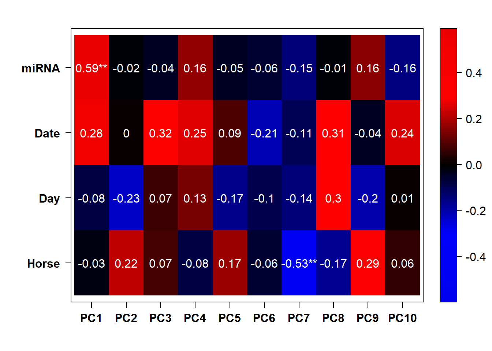
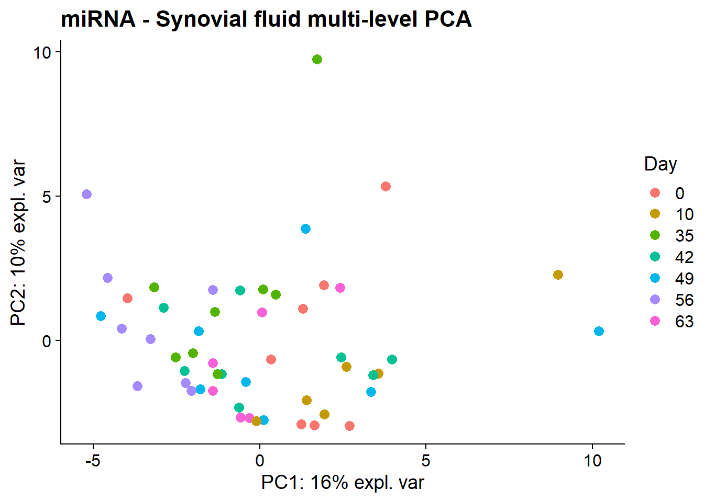
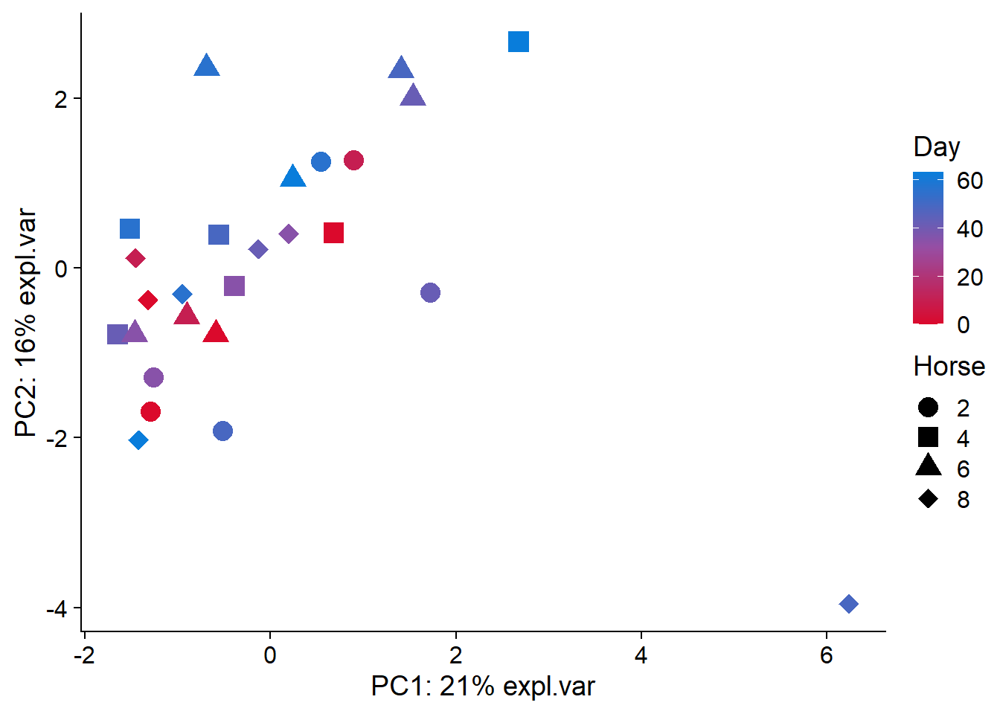
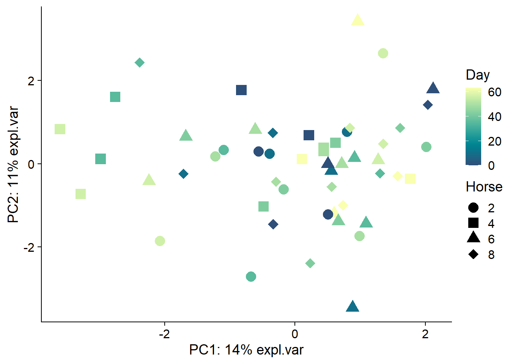
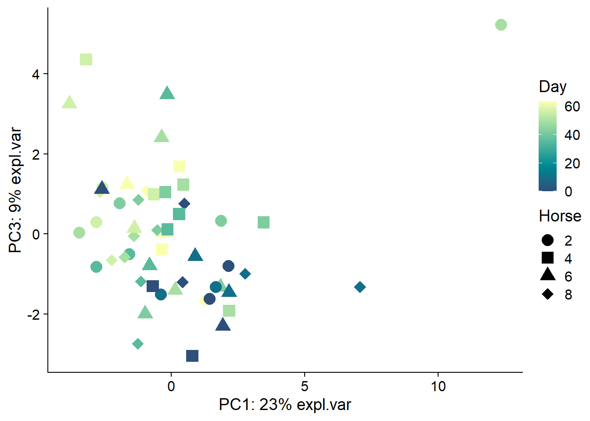

Exploratory data analysis - sequencing data
Emily Johnson
2022-09-28
Last updated: 2022-12-12
Checks: 6 1
Knit directory: anderson-peffers_OA/
This reproducible R Markdown analysis was created with workflowr (version 1.7.0). The Checks tab describes the reproducibility checks that were applied when the results were created. The Past versions tab lists the development history.
The R Markdown file has unstaged changes. To know which version of
the R Markdown file created these results, you’ll want to first commit
it to the Git repo. If you’re still working on the analysis, you can
ignore this warning. When you’re finished, you can run
wflow_publish to commit the R Markdown file and build the
HTML.
Great job! The global environment was empty. Objects defined in the global environment can affect the analysis in your R Markdown file in unknown ways. For reproduciblity it’s best to always run the code in an empty environment.
The command set.seed(20220927) was run prior to running
the code in the R Markdown file. Setting a seed ensures that any results
that rely on randomness, e.g. subsampling or permutations, are
reproducible.
Great job! Recording the operating system, R version, and package versions is critical for reproducibility.
Nice! There were no cached chunks for this analysis, so you can be confident that you successfully produced the results during this run.
Great job! Using relative paths to the files within your workflowr project makes it easier to run your code on other machines.
Great! You are using Git for version control. Tracking code development and connecting the code version to the results is critical for reproducibility.
The results in this page were generated with repository version cbc8d58. See the Past versions tab to see a history of the changes made to the R Markdown and HTML files.
Note that you need to be careful to ensure that all relevant files for
the analysis have been committed to Git prior to generating the results
(you can use wflow_publish or
wflow_git_commit). workflowr only checks the R Markdown
file, but you know if there are other scripts or data files that it
depends on. Below is the status of the Git repository when the results
were generated:
Ignored files:
Ignored: .Rhistory
Ignored: .Rproj.user/
Ignored: analysis/.Rhistory
Untracked files:
Untracked: analysis/06_jDR_2.Rmd
Untracked: analysis/08_Functional_enrichment_2.Rmd
Untracked: analysis/about_check.Rmd
Untracked: code/modified_heatmap.R
Untracked: data/complete_annotation.csv
Untracked: data/complete_annotation.rds
Untracked: data/miRNA.dat
Untracked: data/plasma_sequencing_data.rds
Untracked: data/sf_sequencing_data.rds
Untracked: imgs/jDR/plasma/v1/
Untracked: imgs/jDR/plasma/v2_USETHIS/
Untracked: imgs/jDR/synovial_fluid/v1/
Untracked: imgs/jDR/synovial_fluid/v2_USETHIS/
Untracked: imgs/sampling_types.png
Untracked: output/complete_annotation.csv
Untracked: output/complete_annotation.rds
Untracked: output/enrichment_results/
Untracked: plasma_model2.hdf5
Untracked: sf_time_model2.hdf5
Unstaged changes:
Modified: analysis/04_Sequencing_QC_normalisation.Rmd
Modified: analysis/05_Sequencing_EDA.Rmd
Modified: analysis/06_jDR.Rmd
Deleted: analysis/06_jDR_test.Rmd
Modified: analysis/08_Functional_enrichment.Rmd
Modified: analysis/_site.yml
Modified: data/mofa2_plasma.rds
Modified: data/mofa2_plasma_df.rds
Modified: data/mofa2_sf.rds
Modified: data/mofa2_sf_df.rds
Deleted: docs.zip
Deleted: imgs/jDR/plasma/gsea_lipid_binding.png
Deleted: imgs/jDR/plasma/gsea_organitrogen.png
Deleted: imgs/jDR/plasma/gsea_phospholipid.png
Deleted: imgs/jDR/plasma/miRNA_plasma_factor2.PDF
Deleted: imgs/jDR/plasma/plasma_f2_gsea.PDF
Deleted: imgs/jDR/plasma/plasma_f2_gsea.png
Deleted: imgs/jDR/plasma/plasma_factor_group_correlation_mofa.PDF
Deleted: imgs/jDR/plasma/plasma_factor_variation_mofa.PDF
Deleted: imgs/jDR/plasma/plasma_factors_gsea_non-sig.PDF
Deleted: imgs/jDR/plasma/plasma_factors_gsea_non-sig.png
Deleted: imgs/jDR/plasma/plasma_mofa.PDF
Deleted: imgs/jDR/plasma/protein_plasma_factor2.PDF
Deleted: imgs/jDR/plasma/synovial_fluid_f5_gsea.PDF
Deleted: imgs/jDR/plasma/synovial_fluid_f5_gsea.png
Deleted: imgs/jDR/plasma/synovial_fluid_factors_gsea_non-sig.PDF
Deleted: imgs/jDR/plasma/synovial_fluid_factors_gsea_non-sig.png
Deleted: imgs/jDR/synovial_fluid/f3_gsea_inflammation.png
Deleted: imgs/jDR/synovial_fluid/gsea_f5_supramolecular_complex.png
Deleted: miRNA.dat
Modified: plasma_model.hdf5
Deleted: protein_plasma_factor2_names.PDF
Modified: sf_model.hdf5
Modified: sf_time_model.hdf5
Note that any generated files, e.g. HTML, png, CSS, etc., are not included in this status report because it is ok for generated content to have uncommitted changes.
These are the previous versions of the repository in which changes were
made to the R Markdown (analysis/05_Sequencing_EDA.Rmd) and
HTML (docs/05_Sequencing_EDA.html) files. If you’ve
configured a remote Git repository (see ?wflow_git_remote),
click on the hyperlinks in the table below to view the files as they
were in that past version.
| File | Version | Author | Date | Message |
|---|---|---|---|---|
| Rmd | 7648b32 | ejjohnson93 | 2022-12-01 | Further visualisation updates |
| html | 7648b32 | ejjohnson93 | 2022-12-01 | Further visualisation updates |
| Rmd | 6ed591f | ejjohnson93 | 2022-11-11 | jDR + clustering + knitting |
| html | 6ed591f | ejjohnson93 | 2022-11-11 | jDR + clustering + knitting |
| Rmd | 928fd81 | ejjohnson93 | 2022-11-08 | jDR + EDA |
| html | 928fd81 | ejjohnson93 | 2022-11-08 | jDR + EDA |
| Rmd | e34c9f9 | ejjohnson93 | 2022-11-03 | Updated theme + additional analysis docs |
| Rmd | c63c64f | ejjohnson93 | 2022-11-01 | Sequencing files created |
| html | c63c64f | ejjohnson93 | 2022-11-01 | Sequencing files created |
Load libraries
source("./code/utility-functions.R") # load helper functions
library(tidyverse)
library(cowplot) # plot theme
library(mixOmics) # multi-level PCA
library(viridis) # colour schemes
library(ggpubr) # utilities to arrange/annotate ggplot2 plots
library(PCAtools) # pca & correlation plotLoad data
# Plasma
plasma_pheno_seq <- readRDS("./data/plasma_sequencing_pheno.rds")
plasma_miRNA_data <- readRDS("./data/plasma_miRNA_data.rds")
plasma_lncRNA_data <- readRDS("./data/plasma_lncRNA_data.rds")
plasma_snoRNA_data <- readRDS("./data/plasma_snoRNA_data.rds")
plasma_snRNA_data <- readRDS("./data/plasma_snRNA_data.rds")
plasma_tRNA_data <- readRDS("./data/plasma_tRNA_data.rds")
plasma_sequencing_data <- readRDS("./data/plasma_sequencing_data.rds")
# SF
sf_pheno_seq <- readRDS("./data/sf_sequencing_pheno.rds")
sf_miRNA_data <- readRDS("./data/sf_miRNA_data.rds")
sf_lncRNA_data <- readRDS("./data/sf_lncRNA_data.rds")
sf_snoRNA_data <- readRDS("./data/sf_snoRNA_data.rds")
sf_snRNA_data <- readRDS("./data/sf_snRNA_data.rds")
sf_sequencing_data <- readRDS("./data/sf_sequencing_data.rds")miRNA
PCA
Plasma
row.names(plasma_pheno_seq) <- plasma_pheno_seq$Sample.NumbermiRNA_plasma_pca_res <- pca(na.omit(plasma_miRNA_data), metadata = plasma_pheno_seq, scale = TRUE, center = TRUE)# Colour scheme for plasma
redblue <- colorRampPalette(c("#db092c", "#984ea3", "#097ddb"))(50)
# PCA plot
plasma_miRNA_PCA <- plotPCA(miRNA_plasma_pca_res,
PCs=c(1,2),
colours = redblue,
colour.data=plasma_pheno_seq$Day,
shape.data=plasma_pheno_seq$Horse,
colour.lab="Day",
shape.lab="Horse")
plasma_miRNA_PCA# Correlation plot
plasma_miRNA_corplot <- eigencorplotPCA(miRNA_plasma_pca_res,
metavars = c("Day", "Horse", "Date", "miRNA"))
plasma_miRNA_corplot
SF
row.names(sf_pheno_seq) <- sf_pheno_seq$Sample.NumbermiRNA_sf_pca_res <- pca(na.omit(sf_miRNA_data), metadata = sf_pheno_seq, scale = TRUE, center = TRUE)# Colour scheme for synovial fluid
yellowblue <- hcl.colors(50, "BluYl")
# PCA plot
sf_miRNA_PCA <- plotPCA(miRNA_sf_pca_res,
PCs=c(1,2),
colours=yellowblue,
colour.data=sf_pheno_seq$Day,
shape.data=sf_pheno_seq$Horse,
colour.lab="Day",
shape.lab="Horse")
sf_miRNA_PCA
# Correlation plot
sf_miRNA_corplot <- eigencorplotPCA(miRNA_sf_pca_res,
metavars = c("Day", "Horse", "Date", "miRNA", "Group"))
sf_miRNA_corplotMulti-level PCA
Plasma
plasma_miRNA_ml_PCA <- multi_level_pca(na.omit(plasma_miRNA_data),
multilevel = plasma_pheno_seq$Horse,
group = plasma_pheno_seq$Day, group.lab = "Day", title = "miRNA - Plasma multi-level PCA")plasma_miRNA_ml_PCASF
sf_miRNA_ml_PCA <- multi_level_pca(na.omit(sf_miRNA_data),
multilevel = sf_pheno_seq$Horse,
group = sf_pheno_seq$Day, group.lab = "Day", title = "miRNA - Synovial fluid multi-level PCA")sf_miRNA_ml_PCA
lncRNA
PCA
Plasma
lncRNA_plasma_pca_res <- pca(na.omit(plasma_lncRNA_data), metadata = plasma_pheno_seq, scale = TRUE, center = TRUE)# PCA plot
plasma_lncRNA_PCA <- plotPCA(lncRNA_plasma_pca_res,
PCs=c(1,2),
colours=redblue,
colour.data=plasma_pheno_seq$Day,
shape.data=plasma_pheno_seq$Horse,
colour.lab="Day",
shape.lab="Horse")
plasma_lncRNA_PCA# Correlation plot
plasma_lncRNA_corplot <- eigencorplotPCA(lncRNA_plasma_pca_res,
metavars = c("Day", "Horse", "Date", "lncRNA"))
plasma_lncRNA_corplotSF
lncRNA_sf_pca_res <- pca(na.omit(sf_lncRNA_data), metadata = sf_pheno_seq, scale = TRUE, center = TRUE)# PCA plot
sf_lncRNA_PCA <- plotPCA(lncRNA_sf_pca_res,
PCs=c(1,2),
colours=yellowblue,
colour.data=sf_pheno_seq$Day,
shape.data=sf_pheno_seq$Horse,
colour.lab="Day",
shape.lab="Horse")
sf_lncRNA_PCA# Correlation plot
sf_lncRNA_corplot <- eigencorplotPCA(lncRNA_sf_pca_res,
metavars = c("Day", "Horse", "Date", "lncRNA", "Group"))
sf_lncRNA_corplotMulti-level PCA
Plasma
plasma_lncRNA_ml_PCA <- multi_level_pca(na.omit(plasma_lncRNA_data),
multilevel = plasma_pheno_seq$Horse,
group = plasma_pheno_seq$Day, group.lab = "Day", title = "lncRNA - Plasma multi-level PCA")plasma_lncRNA_ml_PCASF
sf_lncRNA_ml_PCA <- multi_level_pca(na.omit(sf_lncRNA_data),
multilevel = sf_pheno_seq$Horse,
group = sf_pheno_seq$Day, group.lab = "Day", title = "lncRNA - Synovial fluid multi-level PCA")sf_lncRNA_ml_PCAsnRNA
PCA
Plasma
snRNA_plasma_pca_res <- pca(na.omit(plasma_snRNA_data), metadata = plasma_pheno_seq, scale = TRUE, center = TRUE)# PCA plot
plasma_snRNA_PCA <- plotPCA(snRNA_plasma_pca_res,
PCs=c(1,2),
colours=redblue,
colour.data=plasma_pheno_seq$Day,
shape.data=plasma_pheno_seq$Horse,
colour.lab="Day",
shape.lab="Horse")
plasma_snRNA_PCA
# Correlation plot
plasma_snRNA_corplot <- eigencorplotPCA(snRNA_plasma_pca_res,
metavars = c("Day", "Horse", "Date", "snRNA"))
plasma_snRNA_corplotSF
snRNA_sf_pca_res <- pca(na.omit(sf_snRNA_data), metadata = sf_pheno_seq, scale = TRUE, center = TRUE)# PCA plot
sf_snRNA_PCA <- plotPCA(snRNA_sf_pca_res,
PCs=c(1,2),
colours=yellowblue,
colour.data=sf_pheno_seq$Day,
shape.data=sf_pheno_seq$Horse,
colour.lab="Day",
shape.lab="Horse")
sf_snRNA_PCA
# Correlation plot
sf_snRNA_corplot <- eigencorplotPCA(snRNA_sf_pca_res,
metavars = c("Day", "Horse", "Date", "snRNA", "Group"))
sf_snRNA_corplotMulti-level PCA
Plasma
plasma_snRNA_ml_PCA <- multi_level_pca(na.omit(plasma_snRNA_data),
multilevel = plasma_pheno_seq$Horse,
group = plasma_pheno_seq$Day, group.lab = "Day", title = "snRNA - Plasma multi-level PCA")plasma_snRNA_ml_PCASF
sf_snRNA_ml_PCA <- multi_level_pca(na.omit(sf_snRNA_data),
multilevel = sf_pheno_seq$Horse,
group = sf_pheno_seq$Day, group.lab = "Day", title = "snRNA - Synovial fluid multi-level PCA")sf_snRNA_ml_PCAAll sequencing data
seq_plasma_pca_res <- pca(na.omit(plasma_sequencing_data), metadata = plasma_pheno_seq, scale = TRUE, center = TRUE)# PCA plot
plasma_sequencing_PCA <- plotPCA(seq_plasma_pca_res,
PCs=c(1,2),
colours=redblue,
colour.data=plasma_pheno_seq$Day,
shape.data=plasma_pheno_seq$Horse,
colour.lab="Day",
shape.lab="Horse")
plasma_sequencing_PCA# Correlation plot
plasma_sequencing_corplot <- eigencorplotPCA(seq_plasma_pca_res,
metavars = c("Day", "Horse", "Date"))
plasma_sequencing_corplotseq_sf_pca_res <- pca(na.omit(sf_sequencing_data), metadata = sf_pheno_seq, scale = TRUE, center = TRUE)# PCA plot
sf_sequencing_PCA <- plotPCA(seq_sf_pca_res,
PCs=c(1,3),
colours=yellowblue,
colour.data=sf_pheno_seq$Day,
shape.data=sf_pheno_seq$Horse,
colour.lab="Day",
shape.lab="Horse")
sf_sequencing_PCA
# Correlation plot
sf_sequencing_corplot <- eigencorplotPCA(seq_sf_pca_res,
metavars = c("Day", "Horse", "Date", "Group"))
sf_sequencing_corplot
Conclusions
Will not include snoRNA data in clustering analysis due to extremely high proportion of missing values (only 3 rows in SF data and plasma data after filtering). However, have included it in factor analysis as all the sequencing data was collapsed together and factor analysis is not sensitive to missing values. Notable perhaps that URS00006ACE58_9796 and URS000068B4BE_9796 present in both.
sessionInfo()R version 4.2.0 (2022-04-22 ucrt)
Platform: x86_64-w64-mingw32/x64 (64-bit)
Running under: Windows 10 x64 (build 19044)
Matrix products: default
locale:
[1] LC_COLLATE=English_United Kingdom.utf8
[2] LC_CTYPE=English_United Kingdom.utf8
[3] LC_MONETARY=English_United Kingdom.utf8
[4] LC_NUMERIC=C
[5] LC_TIME=English_United Kingdom.utf8
attached base packages:
[1] stats graphics grDevices utils datasets methods base
other attached packages:
[1] ggpubr_0.4.0 viridis_0.6.2 viridisLite_0.4.0 R.utils_2.11.0
[5] R.oo_1.25.0 R.methodsS3_1.8.2 PCAtools_2.8.0 ggrepel_0.9.1
[9] mixOmics_6.20.0 lattice_0.20-45 MASS_7.3-56 cowplot_1.1.1
[13] reshape2_1.4.4 forcats_0.5.1 stringr_1.4.0 dplyr_1.0.9
[17] purrr_0.3.4 readr_2.1.2 tidyr_1.2.0 tibble_3.1.7
[21] ggplot2_3.3.6 tidyverse_1.3.1
loaded via a namespace (and not attached):
[1] colorspace_2.0-3 ggsignif_0.6.3
[3] ellipsis_0.3.2 rprojroot_2.0.3
[5] corpcor_1.6.10 fs_1.5.2
[7] rstudioapi_0.13 farver_2.1.0
[9] RSpectra_0.16-1 fansi_1.0.3
[11] lubridate_1.8.0 xml2_1.3.3
[13] codetools_0.2-18 sparseMatrixStats_1.8.0
[15] knitr_1.39 jsonlite_1.8.0
[17] workflowr_1.7.0 broom_0.8.0
[19] dbplyr_2.2.0 compiler_4.2.0
[21] httr_1.4.3 dqrng_0.3.0
[23] backports_1.4.1 assertthat_0.2.1
[25] Matrix_1.5-1 fastmap_1.1.0
[27] cli_3.3.0 later_1.3.0
[29] BiocSingular_1.12.0 htmltools_0.5.2
[31] tools_4.2.0 rsvd_1.0.5
[33] igraph_1.3.2 gtable_0.3.0
[35] glue_1.6.2 Rcpp_1.0.8.3
[37] carData_3.0-5 cellranger_1.1.0
[39] jquerylib_0.1.4 vctrs_0.4.1
[41] DelayedMatrixStats_1.18.0 xfun_0.31
[43] beachmat_2.12.0 rvest_1.0.2
[45] lifecycle_1.0.1 irlba_2.3.5
[47] rstatix_0.7.0 scales_1.2.0
[49] hms_1.1.1 promises_1.2.0.1
[51] MatrixGenerics_1.8.0 parallel_4.2.0
[53] RColorBrewer_1.1-3 yaml_2.3.5
[55] gridExtra_2.3 sass_0.4.1
[57] stringi_1.7.6 highr_0.9
[59] S4Vectors_0.34.0 ScaledMatrix_1.4.0
[61] BiocGenerics_0.42.0 BiocParallel_1.30.3
[63] rlang_1.0.2 pkgconfig_2.0.3
[65] matrixStats_0.62.0 evaluate_0.15
[67] labeling_0.4.2 tidyselect_1.1.2
[69] plyr_1.8.7 magrittr_2.0.3
[71] R6_2.5.1 IRanges_2.30.0
[73] generics_0.1.2 DelayedArray_0.22.0
[75] DBI_1.1.2 pillar_1.7.0
[77] haven_2.5.0 whisker_0.4
[79] withr_2.5.0 abind_1.4-5
[81] car_3.1-0 modelr_0.1.8
[83] crayon_1.5.1 rARPACK_0.11-0
[85] utf8_1.2.2 ellipse_0.4.3
[87] tzdb_0.3.0 rmarkdown_2.14
[89] grid_4.2.0 readxl_1.4.0
[91] git2r_0.30.1 reprex_2.0.1
[93] digest_0.6.29 httpuv_1.6.5
[95] stats4_4.2.0 munsell_0.5.0
[97] bslib_0.3.1